Manual operacional, passo a passo, para os perfis de acesso do sistema: Paciente, Profissional, Administrador e Técnico (o Técnico tem o mesmo acesso do Administrador — ver 4.9). Descreve o que cada tela faz e como usá-la — não é a especificação técnica (isso está em
docs/spec.md) nem o guia de conformidade LGPD voltado ao público (isso está emdocumentacao/documentacao_cliente.html, com foco em proteção de dados). Escrito a partir do comportamento real das telas em 03/08/2026; revisado em 09/09/2026 para incluir verificação em duas etapas, lista de espera, avaliação pós-consulta (NPS), o perfil Técnico e o painel de logs.
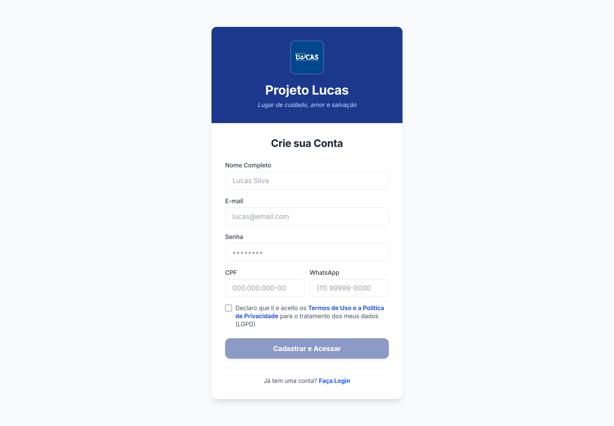
Só o paciente se cadastra sozinho, na tela Cadastro (link a partir da tela de Login). Profissionais e administradores não se auto-cadastram — a conta deles é criada por um administrador (ver 4.2).
Passos:
Se o e-mail informado já estiver em uso — como paciente ou como profissional — o sistema recusa o cadastro e avisa que o e-mail já está cadastrado.
Ainda não verifiquei meu e-mail — posso usar o sistema? Sim. Enquanto a conta não é verificada, aparece uma faixa amarela no topo ("Seu e-mail ainda não foi verificado. Por favor, verifique sua caixa de entrada."). Você consegue fazer login e navegar normalmente; a faixa some assim que você clica no link do e-mail.
O link de verificação expirou (mais de 24h) e não recebi outro. O sistema não tem um botão de "reenviar verificação". Nesse caso, contate a administração da clínica — ela consegue reenviar o e-mail ou confirmar a conta manualmente. Verifique antes a caixa de spam/lixo eletrônico.
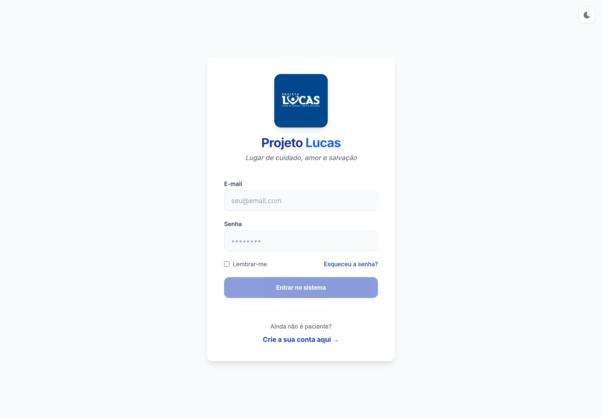
Na tela Login, informe e-mail e senha. Se as credenciais não conferirem, o sistema mostra um erro genérico (não informa se o problema foi o e-mail ou a senha, por segurança).
Sua sessão fica ativa por um período limitado; ao expirar, o sistema pede login novamente.
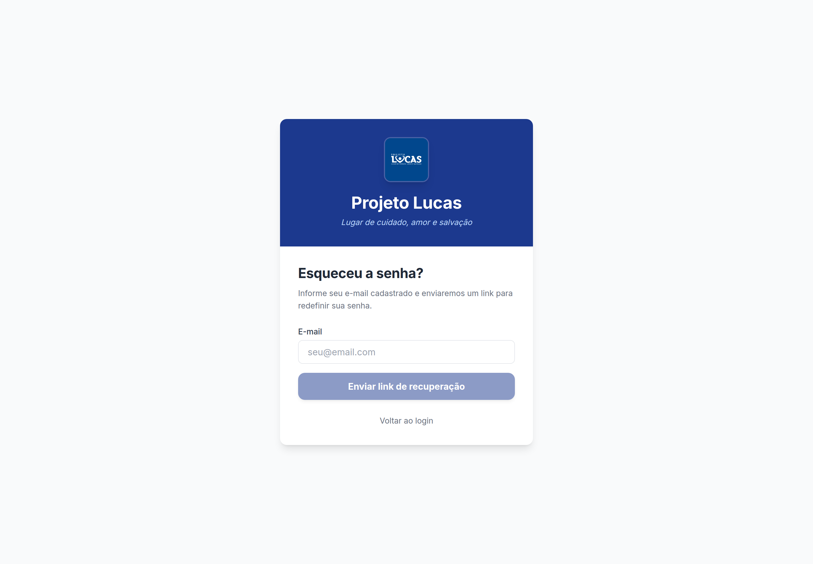
Na tela de login, use o link Esqueci minha senha:
No rodapé do menu lateral, o botão Sair do sistema encerra a sessão. O token de acesso é invalidado imediatamente no servidor (não basta fechar a aba — ver Segurança).
O ícone de sol/lua no topo da tela alterna entre tema claro e escuro. A preferência fica salva para os próximos acessos.
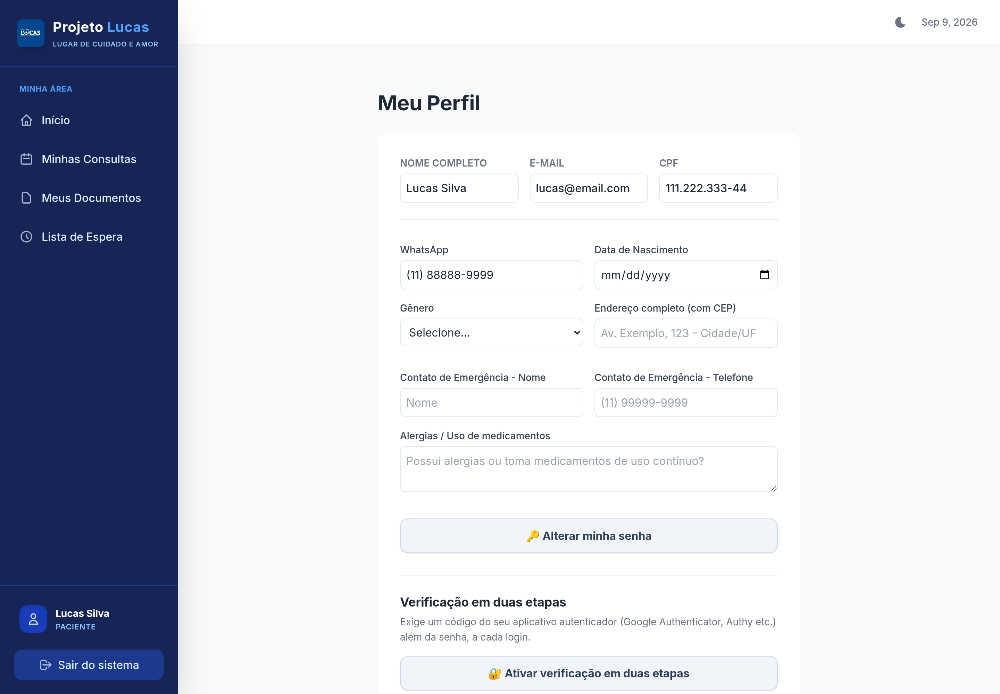
A verificação em duas etapas está disponível para Administrador, Profissional e Paciente. Quando ativada, o login passa a exigir, além da senha, um código de 6 dígitos de um aplicativo autenticador (Google Authenticator, Authy e similares).
Como ativar:
Como é o login depois de ativada: você informa e-mail e senha normalmente; em seguida o sistema pede o código do aplicativo. Só depois do código a sessão é aberta. Perdeu o celular? Use um dos códigos de backup no lugar do código do aplicativo.
Como desativar: na mesma tela, clique em Desativar e informe sua senha e um código (do aplicativo ou de backup). Ao desativar, todas as suas sessões abertas são encerradas.
Depois de 15 minutos sem nenhuma ação na área logada, o sistema encerra a sessão automaticamente e volta para a tela de login. É uma proteção para computadores compartilhados (recepção, consultório). Basta entrar de novo — nada é perdido.
Paciente e Profissional: em Meu Perfil, botão Alterar minha senha — informe a nova senha duas vezes (mínimo de 6 caracteres). Administrador/Técnico não têm "Meu Perfil"; se precisarem trocar a senha, usam o fluxo Esqueci minha senha (1.3).
Menu lateral ("Minha Área"): Início · Minhas Consultas · Meus Documentos, com Meu Perfil no rodapé.
Tela para ver e atualizar seus próprios dados cadastrais (nome, telefone, endereço, contato de emergência, alergias etc.) a qualquer momento.
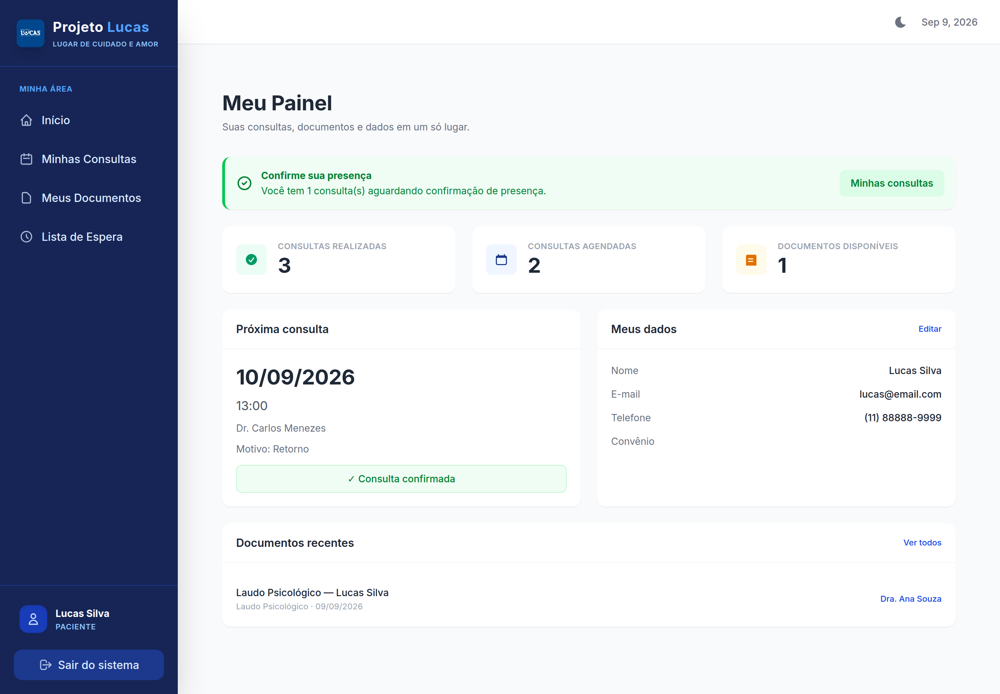
Mostra, num só lugar:
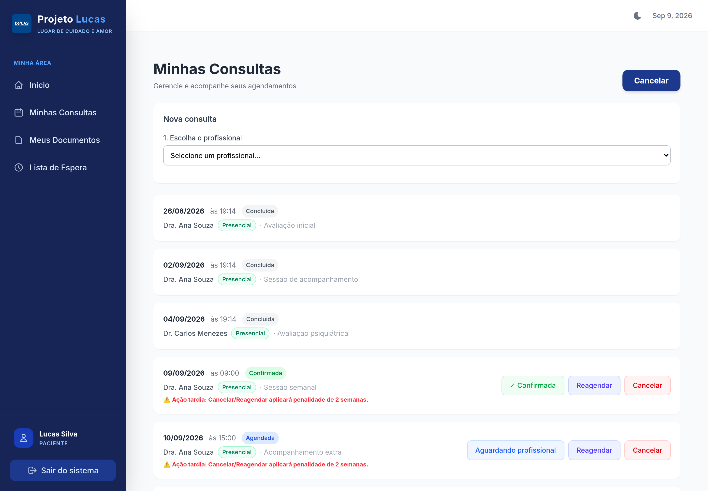
Em Minhas Consultas, use o formulário de agendamento:
| Passo | Ação |
|---|---|
| 1 | Escolha o profissional — a lista mostra a modalidade de atendimento de cada um (presencial, online ou híbrido). |
| 2 | Escolha a data. |
| 3 | Escolha um horário livre entre os disponíveis naquele dia — horários ocupados ou já passados não aparecem. |
| 4 | Descreva, opcionalmente, o motivo da consulta. |
| 5 | Confirme. A consulta é criada no status Aguardando Confirmação. |
Se você estiver bloqueado por penalidade (ver 2.9), o sistema recusa o agendamento e informa a data em que o bloqueio termina.
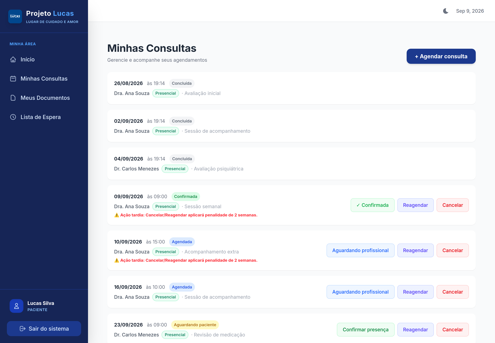
Cada consulta listada em Minhas Consultas mostra um status:
| Status na tela | O que significa | O que fazer |
|---|---|---|
| Aguardando Confirmação | Você agendou, falta o profissional aceitar. | Aguardar. |
| Agendada | O profissional aceitou. | Aguardar o profissional confirmar (etapa seguinte da dupla confirmação). |
| Aguardando paciente | O profissional já confirmou; falta você confirmar. | Confirmar sua presença (ver 2.5). |
| Confirmada | Ambos os lados confirmaram. | Comparecer na data marcada. |
| Concluída | O profissional já atendeu e registrou o prontuário. | — |
| Cancelada | A consulta foi cancelada (por você, pelo profissional ou por um admin). | — |
| Faltou | Você não compareceu e o profissional marcou falta. | — |
A consulta passa por duas confirmações antes do dia do atendimento: primeiro o profissional, depois você. Você só consegue confirmar depois que o profissional já confirmou (status Aguardando paciente) — se tentar antes, o sistema avisa: "Aguardando confirmação do profissional primeiro."
Em Minhas Consultas, o botão Cancelar aparece em toda consulta que ainda não foi encerrada — inclusive nas que ainda estão "Aguardando Confirmação". Ao cancelar:
A janela de cancelamento mostra um aviso de penalidade sempre que faltam menos de 24h para o horário (ou a data já passou). Esse aviso é preventivo: se a consulta já passou da data, o cancelamento não bloqueia sua conta — a penalidade só vale para consulta que ainda vai acontecer.
O botão Reagendar só aparece depois que o profissional já aceitou a consulta (status "Agendada" ou adiante). Se ela ainda está "Aguardando Confirmação", cancele e agende de novo.
Ao reagendar para nova data/horário, a consulta volta para "Agendada" e o ciclo de dupla confirmação recomeça daí — o profissional confirma de novo e depois você — mesmo que ela já estivesse totalmente confirmada antes. Reagendar exige justificativa e, se a consulta original estiver a menos de 24h, aplica a mesma penalidade do cancelamento tardio.
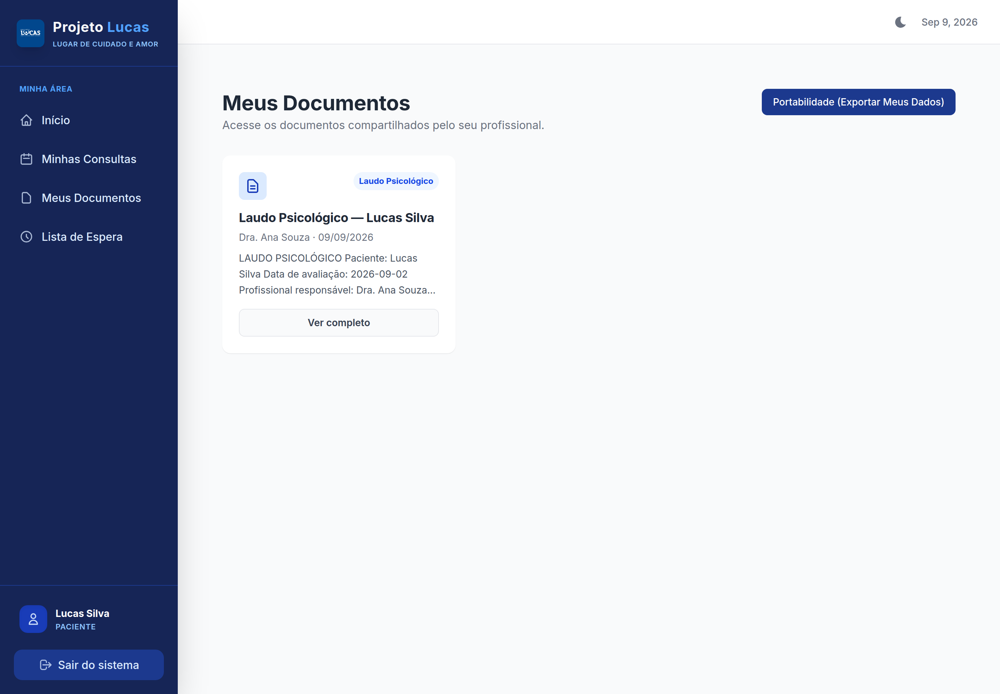
Nesta tela você vê os documentos clínicos (laudos, atestados, exames) que o profissional liberou para você. Documentos ainda não liberados pelo profissional não aparecem. Documentos em PDF podem ser baixados pelo botão Baixar PDF.
O sistema aplica penalidade progressiva quando você falta a uma consulta ou cancela com menos de 24h de antecedência (depois que a consulta já havia sido aceita pelo profissional):
Enquanto estiver bloqueado, ao tentar agendar o sistema recusa e informa a data e a hora em que o bloqueio termina. Passado esse prazo, o agendamento volta a funcionar sozinho.
Uma falta marcada pelo profissional (você não compareceu) sempre gera penalidade, mesmo que a data já estivesse próxima ou distante — não há regra de antecedência para falta, só para cancelamento.
Se precisar de desbloqueio antes do prazo, contate a administração (ver 4.3).
Na tela Meus Documentos, o botão Portabilidade (Exportar Meus Dados) gera um arquivo JSON com todos os seus dados: cadastro, prontuários, documentos, consultas e o registro do seu consentimento aos Termos de Uso — seu direito de portabilidade garantido pela LGPD (Art. 18, V).
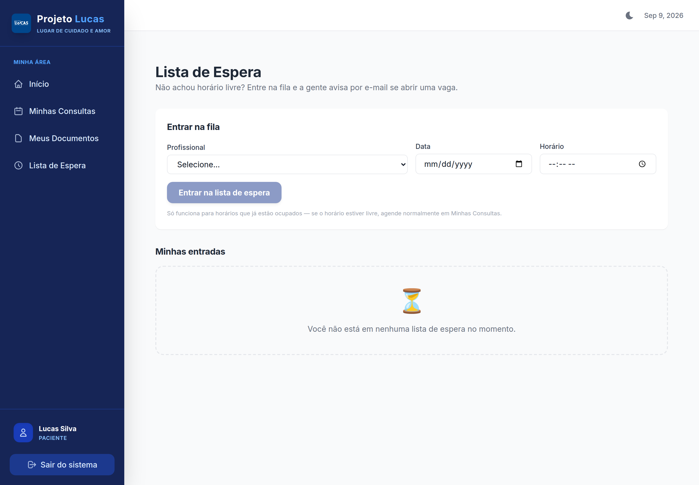
Quando o profissional não tem horário livre na data que você quer, use a Lista de Espera (menu lateral):
Na própria tela você acompanha o status de cada entrada: Aguardando, Vaga oferecida — confira seu e-mail, Confirmada, Expirada ou Cancelada. Enquanto está "Aguardando", o botão Sair remove você da fila.
A vaga confirmada pela lista de espera já entra como uma consulta normal na sua lista de Minhas Consultas, seguindo o ciclo de dupla confirmação.
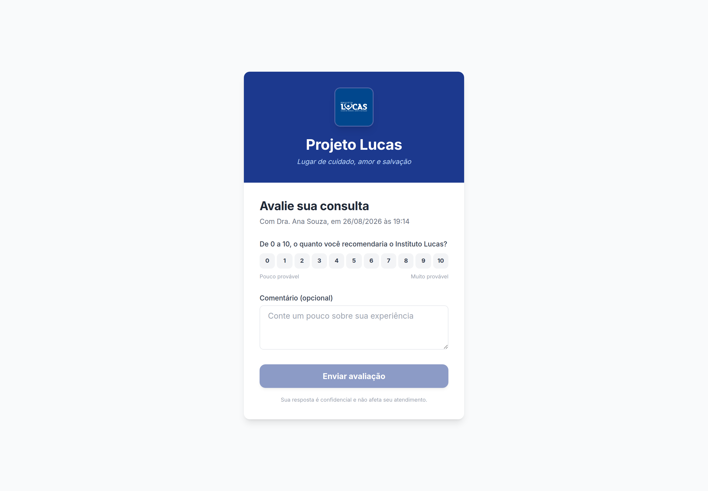
Depois que o profissional registra o prontuário e a consulta é concluída, você recebe um e-mail convidando a avaliar o atendimento (nota de 0 a 10 e um comentário opcional).
Menu lateral ("Área do Profissional"): Início · Minha Disponibilidade · Minha Agenda · Documentos, com Meu Perfil no rodapé.
Além dos dados cadastrais, aqui você define sua modalidade de atendimento (presencial / online / híbrido) — é essa informação que o paciente vê ao escolher entre profissionais na hora de agendar.
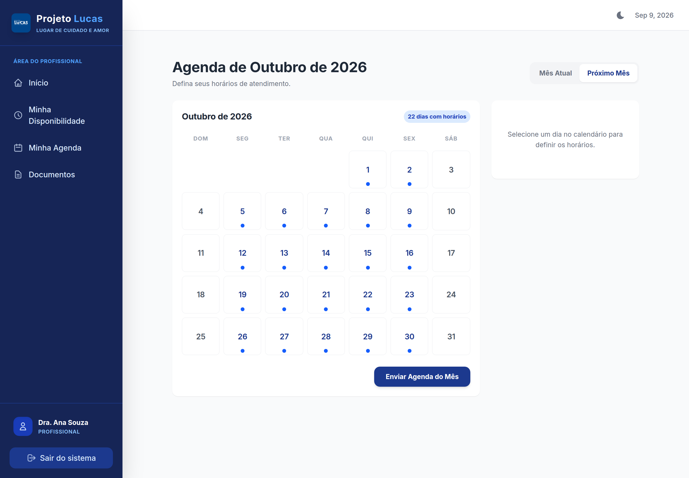
Grade de horários livres para atendimento, organizada por data específica (não por dia da semana recorrente).
Use as setas para navegar entre os meses, marque os horários livres na grade e clique em Salvar para publicar.
Alerta "Atenção ao Prazo". Se você ainda não publicou a agenda e faltam menos de 15 dias para o fim do mês, a tela mostra um aviso amarelo. Ele some assim que você salva pelo menos um horário no mês. É só um lembrete — não bloqueia nada.
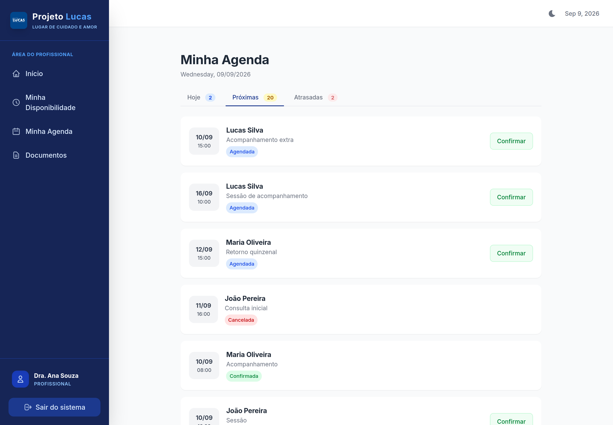
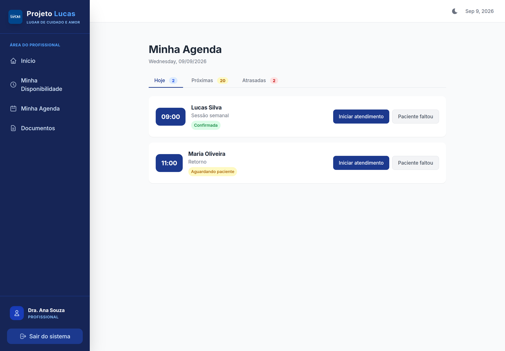
Três abas organizam suas consultas, e cada aba mostra botões diferentes:
| Aba | O que lista | Botões disponíveis |
|---|---|---|
| Hoje | Atendimentos do dia. | Aprovar/Recusar (se "Aguardando Confirmação"); Confirmar (se "Agendada"); Iniciar atendimento e Paciente faltou (de "Agendada" em diante). |
| Próximas | Consultas futuras (não hoje). | Apenas Aprovar/Recusar ou Confirmar. Iniciar atendimento, marcar falta e cancelar não aparecem aqui — só no dia (aba Hoje) ou depois (aba Atrasadas). |
| Atrasadas | Consultas cuja data já passou e ainda sem desfecho (a agenda não "resolve" nada sozinha). | Registrar atendimento, Paciente faltou e Cancelar (ou só Cancelar, se ainda estiver "Aguardando Confirmação"). |
Toda consulta nasce como uma solicitação do paciente, no status Aguardando Confirmação. Nas abas Hoje/Próximas, use:
Depois que a consulta sair de "Aguardando Confirmação", os botões de aprovar/recusar somem — não é mais possível aprovar/recusar de novo.
Recusar não tem desfazer. A consulta vira "Cancelada" definitivamente; se foi engano, o paciente precisa solicitar o agendamento de novo.
Quando a consulta está Agendada, o botão Confirmar registra que você confirma o atendimento. O status vira "Aguardando paciente" — falta agora a confirmação do lado dele.
Este é um ponto que costuma gerar dúvida. A tela Minha Agenda não tem um botão "Cancelar" para uma consulta futura já aceita (status "Agendada", "Aguardando paciente" ou "Confirmada") enquanto a data não chega. As opções do profissional são:
| Situação | O que fazer |
|---|---|
| A consulta ainda está "Aguardando Confirmação" | Use ✕ Recusar (3.4) — vira "Cancelada". |
| A consulta já foi aceita e a data já passou | Aba Atrasadas → botão Cancelar (3.8). |
| A consulta já foi aceita e ainda vai acontecer | Não há botão na sua agenda. Peça à administração para cancelar (ela cancela qualquer consulta pela Agenda Geral — ver 4.4). Alternativa: registrar o desfecho no dia (atendimento ou Paciente faltou). |
Se esse fluxo (pedir à administração) for frequente na clínica, avalie com o time do sistema adicionar um botão Cancelar direto na agenda do profissional.
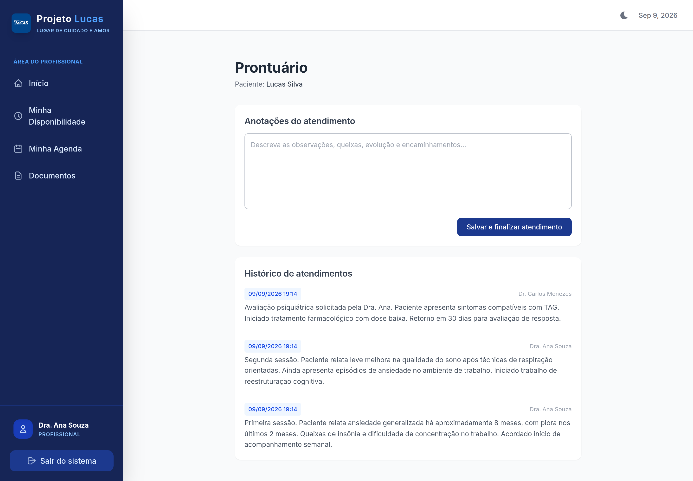
O botão Iniciar atendimento (aba Hoje) ou Registrar atendimento (aba Atrasadas) leva para a tela de Prontuário Eletrônico daquela consulta.
Atenção: salvar o prontuário é o que conclui a consulta — não existe um botão separado de "concluir". Assim que você grava as notas clínicas, o status muda automaticamente para Concluída. Só é possível chegar a essa tela a partir de uma consulta que já existe; não há guarda de status prévio, então tecnicamente dá pra registrar o prontuário mesmo de uma consulta ainda não confirmada — mas o fluxo normal é registrar depois do atendimento de fato acontecer.
Se o paciente não comparecer, use Paciente faltou. O status vira Faltou e uma penalidade é aplicada à conta do paciente automaticamente, sempre — diferente do cancelamento, aqui não existe regra de antecedência de 24h.
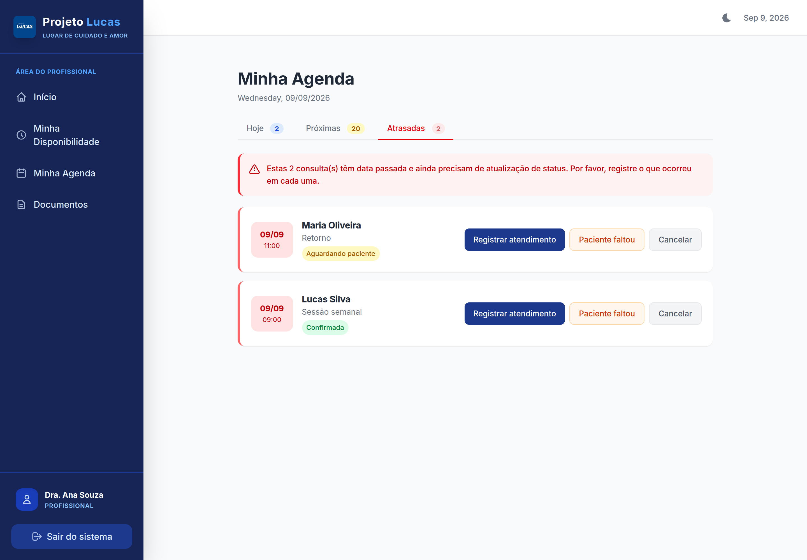
Na aba Atrasadas, consultas ainda em "Aguardando Confirmação" só podem ser canceladas (não faz mais sentido aprovar algo cuja data já passou). Para as demais, o botão Cancelar também está disponível, junto de "Registrar atendimento" e "Paciente faltou".
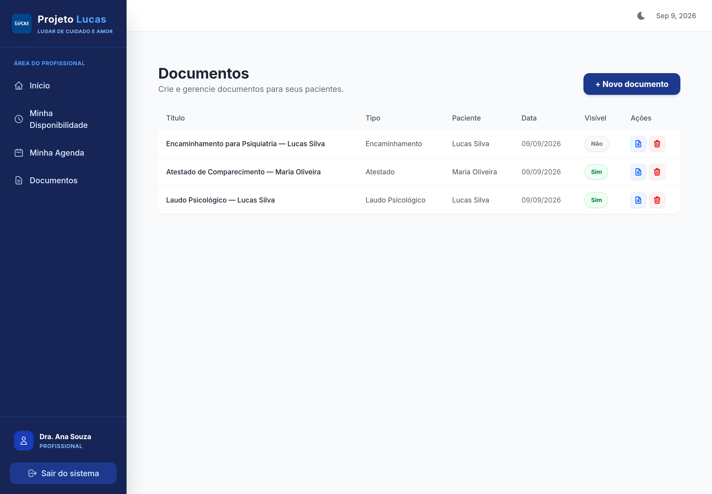
Na tela Documentos:
Depois de criado, o botão de disponibilidade (Sim/Não ou Disponível/Oculto) alterna a visibilidade a qualquer momento — você decide quando o paciente passa a enxergar aquele laudo ou atestado.
PDFs são validados pela assinatura real do arquivo (não só pela extensão) e há um limite de tamanho de aproximadamente 5MB — arquivos disfarçados de PDF ou grandes demais são recusados.
A tela de Prontuário Eletrônico (aberta pelo botão de iniciar/registrar atendimento) mostra, acima do campo de novas anotações, o histórico de prontuários anteriores daquele paciente — consultas passadas com outros profissionais inclusive. É consulta apenas; você edita só a anotação da consulta atual.
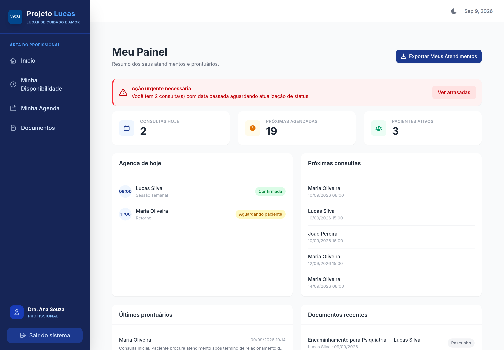
Mostra sua agenda do dia, pendências de confirmação, consultas atrasadas, suas próximas consultas e o total de pacientes únicos que você já atendeu.
No painel Início, o botão Exportar Meus Atendimentos gera um CSV com os prontuários que você criou — um backup do seu próprio trabalho clínico.
.pdf) e ter até ~5MB.Menu lateral ("Administração"): Início · Profissionais · Pacientes · Agenda Geral · Segurança · Logs.
Este capítulo vale igual para o perfil Técnico — ele vê o mesmo menu e tem o mesmo poder do Administrador (ver 4.9).
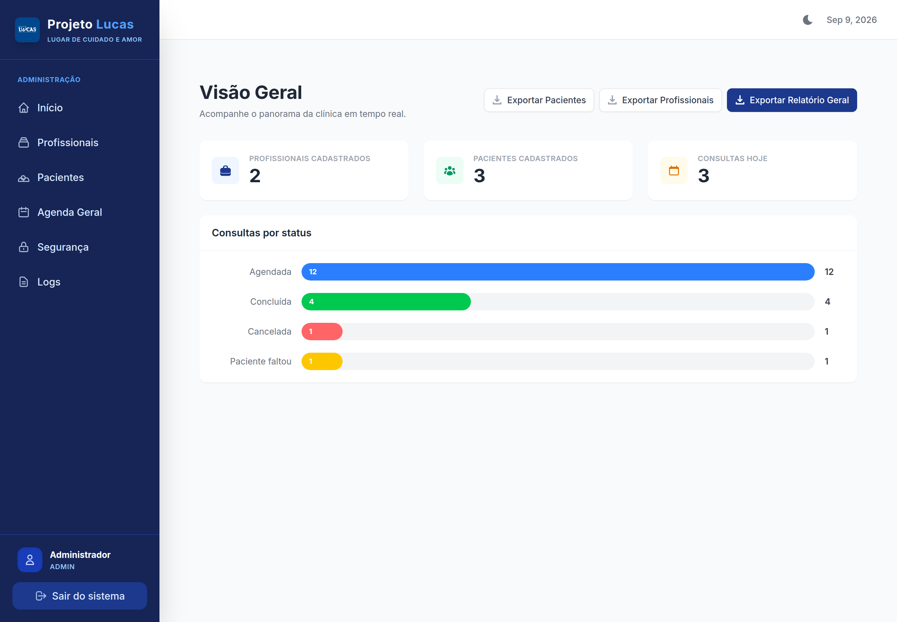
Visão geral da operação: totais de profissionais e pacientes cadastrados, e as consultas do dia agrupadas por status. Os botões Exportar Pacientes, Exportar Profissionais e Exportar Relatório Geral geram os respectivos arquivos CSV (ver 4.5).
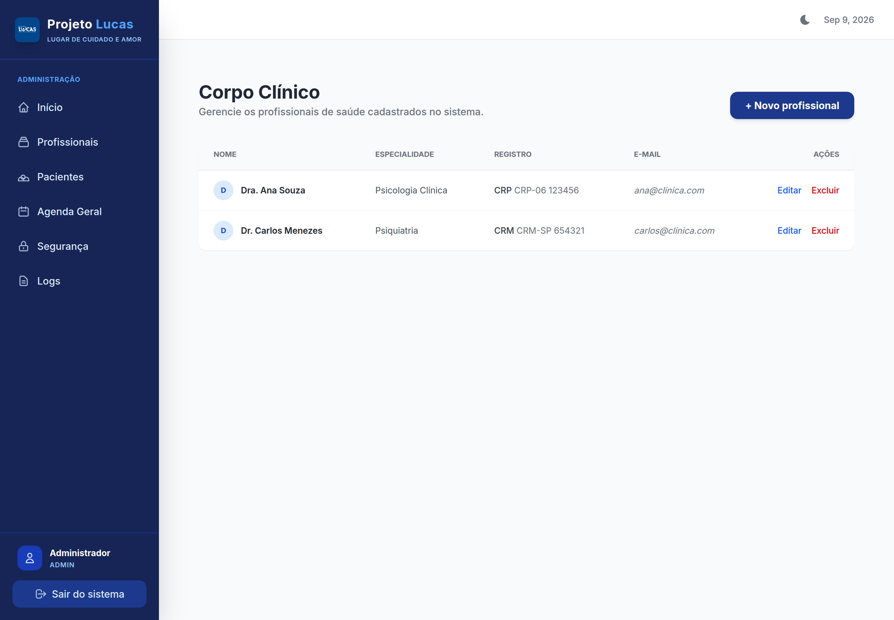
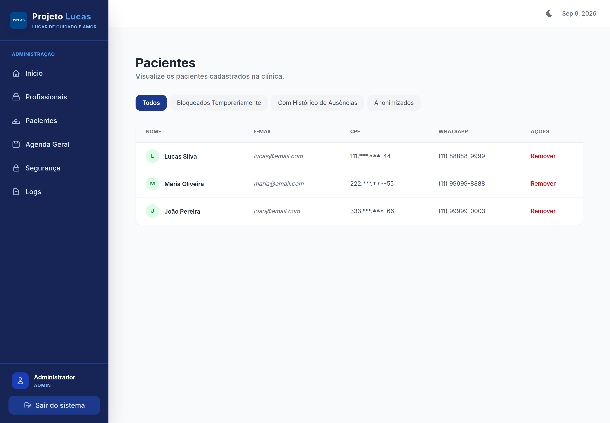
A lista de pacientes pode ser filtrada por Todos, Bloqueados ou Com infrações.
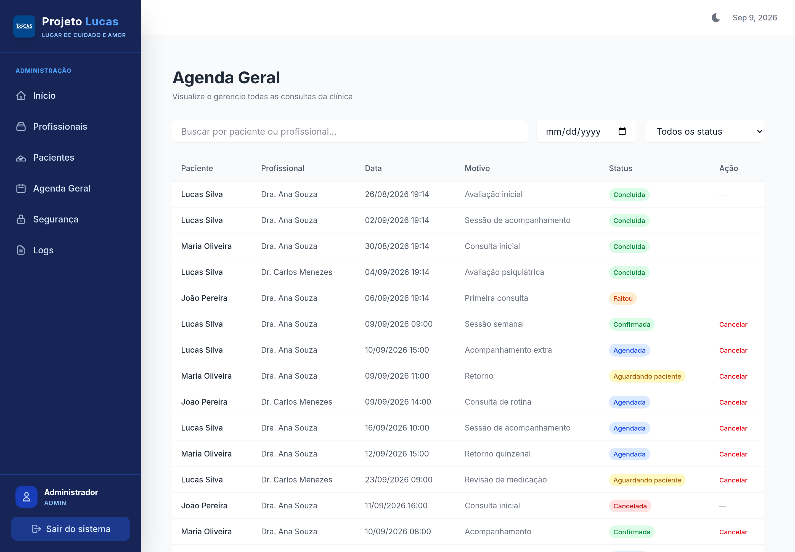
Visão de todas as consultas do sistema, com busca por nome e filtros por status e por data. O botão Cancelar fica disponível para consultas em Agendada, Aguardando paciente ou Confirmada — o administrador pode cancelar qualquer consulta, de qualquer paciente ou profissional, sempre com justificativa obrigatória, igual ao fluxo do paciente (ver 2.6).
É por aqui que se cancela uma consulta futura já aceita quando o pedido parte do profissional (a agenda dele não tem esse botão — ver 3.5.1).
Uma consulta ainda em "Aguardando Confirmação" não mostra o botão Cancelar na Agenda Geral — recusar uma solicitação pendente é ação do profissional (ou ela é cancelada pelo próprio paciente). Para consultas já atrasadas, o desfecho é dado pelo profissional na aba Atrasadas da agenda dele.
| Botão | Formato | Conteúdo |
|---|---|---|
| Exportar Pacientes | CSV | Dados operacionais dos pacientes (CPF mascarado) |
| Exportar Profissionais | CSV | Dados operacionais dos profissionais |
| Exportar Relatório Geral | CSV | Consolidado de consultas |
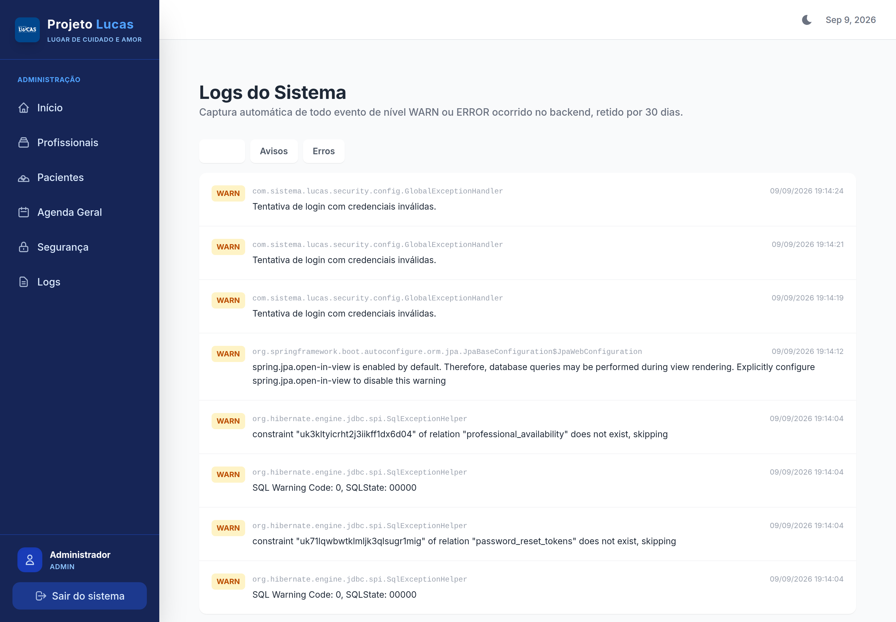
Menu Logs. Lista automática de tudo que o sistema registrou como aviso (WARN) ou erro (ERROR) em qualquer parte do backend — falha de envio de e-mail, erro de integração, exceção inesperada. Serve para diagnosticar problemas sem depender de acesso ao servidor.
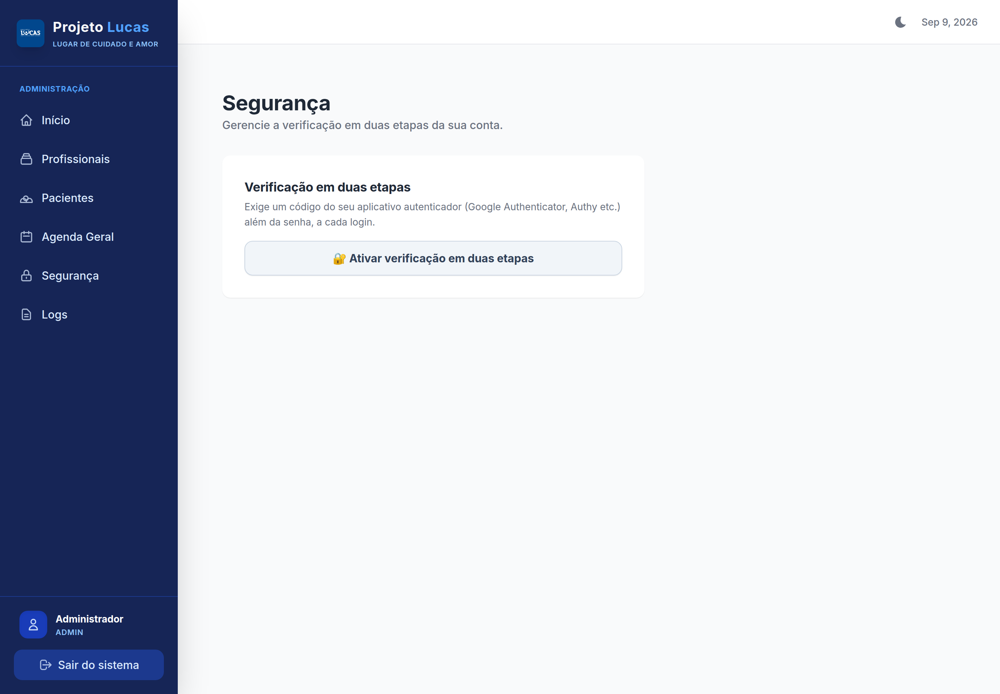
Menu Segurança. Como o Administrador e o Técnico não têm "Meu Perfil", esta tela existe para eles ativarem/desativarem a verificação em duas etapas da própria conta. O passo a passo é o mesmo da 1.6.
blockedUntil nos detalhes do paciente; se o prazo já venceu, o próximo agendamento deveria
funcionar normalmente. Use Desbloquear apenas para liberar antes do prazo.O Técnico é uma conta com o mesmo nível de acesso do Administrador em todo o sistema — não é um perfil restrito nem somente-leitura. Existe apenas para separar o acesso técnico/operacional da administração real da clínica. Só um Administrador cria essa conta; não há auto-cadastro.
Recusa: de Aguardando Confirmação, profissional recusa → Cancelada.
De qualquer estado: cancelar → Cancelada · marcar falta → Faltou · reagendar → volta para Agendada.
Pontos que costumam gerar dúvida:
| Estado da consulta | Paciente | Profissional | Administrador / Técnico |
|---|---|---|---|
| Aguardando Confirmação (ainda não aceita) | Cancelar em Minhas Consultas. Sem penalidade. | Recusar em Minha Agenda (abas Hoje/Próximas; ou Atrasadas se a data passou) → vira Cancelada. | Sem botão de cancelar na Agenda Geral neste estado. |
| Agendada / Aguardando paciente / Confirmada, data ainda no futuro | Cancelar ou Reagendar em Minhas Consultas. Penalidade se < 24h. | Sem botão na agenda enquanto a data não chega. Encaminhar à administração. | Cancelar na Agenda Geral (justificativa obrigatória). |
| Agendada / Aguardando paciente / Confirmada, data já passou (atrasada) | Cancelar em Minhas Consultas (não penaliza — data passada). | Aba Atrasadas: Registrar atendimento, Paciente faltou ou Cancelar. | Cancelar na Agenda Geral. |
| Concluída / Cancelada / Faltou (encerrada) | — | — | — (estado final; não dá para reabrir) |
Veja 1.3. A mensagem de sucesso aparece sempre, mesmo que o e-mail informado não exista no sistema — isso é proposital.
Rotas sensíveis (login, exportações, prontuários, documentos, avaliação de consulta, lista de espera) têm limite de 30 requisições por minuto por IP. Ao passar do limite, o sistema bloqueia por 1 minuto — normalmente resolve sozinho sem precisar de suporte.
Depois de 15 minutos sem atividade na área logada, a sessão expira por segurança e o sistema volta para o login. Basta entrar de novo. Ver 1.7.
Alguém ativou a verificação em duas etapas nessa conta (1.6). O código vem do aplicativo autenticador. Sem o celular, use um código de backup. Sem o aplicativo e sem os códigos de backup, a administração precisa ajudar a recuperar o acesso.
Confira a caixa de spam/lixo eletrônico. Links têm validade: verificação de conta 24h, redefinição de senha curta, oferta de vaga da lista de espera ~2h, avaliação de consulta 7 dias. Expirou? Para verificação e vaga, refaça a ação (login / entrar na fila) ou contate a administração; para senha, peça um novo link em Esqueci minha senha.
Para o detalhamento de conformidade com a LGPD (direitos do titular, retenção de dados, canal de
atendimento à privacidade), consulte o guia
documentacao/documentacao_cliente.html.